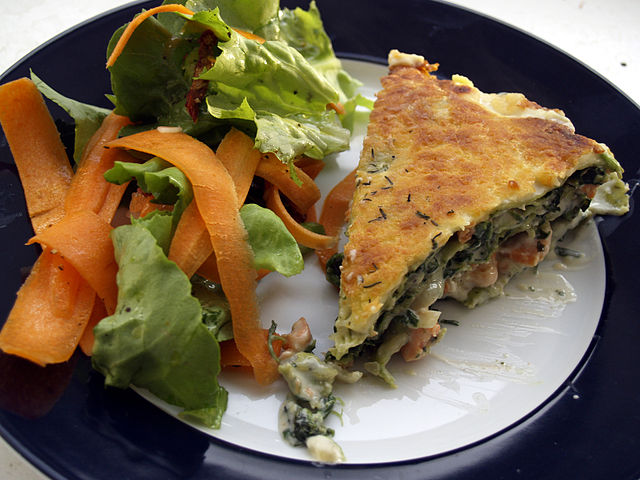

Lasagna

Description
Lasagne are a type of pasta made of very wide, flat sheets. Also Lasagne is an Italian dish made of stacked layers of lasagne alternating with fillings such as meats and tomato sauce, vegetables, cheeses, and seasonings and spices, such as garlic, oregano and basil. The dish may be topped with grated cheese, which becomes melted after baking.
Ingredients
- Lasagne sheets
- Meat
- Tomato sauce
- Vegetables
- Spices
Steps
- Prepare the fillngs
- Stack the sheets with fillings
- Bake lasagna in the oven